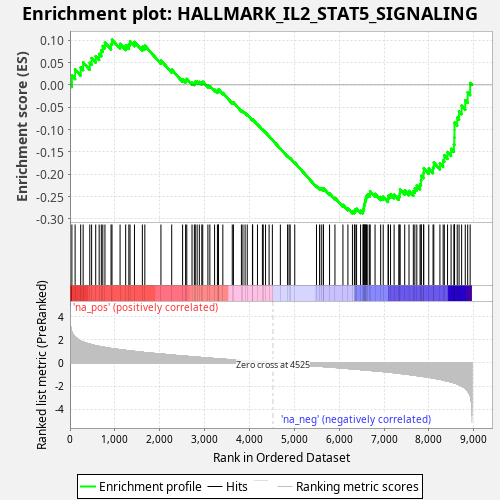
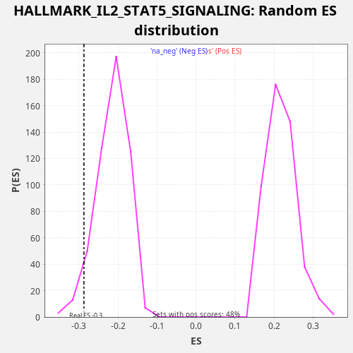

| Dataset | star_PE_rank_metric |
| Phenotype | NoPhenotypeAvailable |
| Upregulated in class | na_neg |
| GeneSet | HALLMARK_IL2_STAT5_SIGNALING |
| Enrichment Score (ES) | -0.2874272 |
| Normalized Enrichment Score (NES) | -1.3355553 |
| Nominal p-value | 0.049713194 |
| FDR q-value | 0.13690116 |
| FWER p-Value | 0.793 |

| SYMBOL | RANK IN GENE LIST | RANK METRIC SCORE | RUNNING ES | CORE ENRICHMENT | |
|---|---|---|---|---|---|
| 1 | NDRG1 | 42 | 2.665 | 0.0211 | No |
| 2 | GSTO1 | 114 | 2.248 | 0.0348 | No |
| 3 | SYT11 | 238 | 1.887 | 0.0392 | No |
| 4 | IKZF2 | 293 | 1.804 | 0.0505 | No |
| 5 | PRNP | 441 | 1.613 | 0.0495 | No |
| 6 | ANXA4 | 482 | 1.570 | 0.0602 | No |
| 7 | CDKN1C | 573 | 1.479 | 0.0643 | No |
| 8 | TNFRSF18 | 650 | 1.423 | 0.0695 | No |
| 9 | MYO1E | 698 | 1.387 | 0.0776 | No |
| 10 | CCND3 | 731 | 1.365 | 0.0872 | No |
| 11 | IL10RA | 779 | 1.334 | 0.0948 | No |
| 12 | NFIL3 | 915 | 1.242 | 0.0916 | No |
| 13 | UCK2 | 936 | 1.234 | 0.1012 | No |
| 14 | NT5E | 1116 | 1.139 | 0.0920 | No |
| 15 | RHOB | 1241 | 1.077 | 0.0884 | No |
| 16 | MAP6 | 1312 | 1.041 | 0.0906 | No |
| 17 | CD48 | 1338 | 1.028 | 0.0977 | No |
| 18 | ALCAM | 1437 | 0.993 | 0.0962 | No |
| 19 | DENND5A | 1613 | 0.919 | 0.0854 | No |
| 20 | GABARAPL1 | 1668 | 0.890 | 0.0879 | No |
| 21 | HIPK2 | 2027 | 0.763 | 0.0547 | No |
| 22 | CCNE1 | 2267 | 0.678 | 0.0343 | No |
| 23 | IRF6 | 2510 | 0.597 | 0.0127 | No |
| 24 | TNFRSF21 | 2577 | 0.577 | 0.0108 | No |
| 25 | LRRC8C | 2603 | 0.567 | 0.0135 | No |
| 26 | PIM1 | 2720 | 0.530 | 0.0055 | No |
| 27 | RABGAP1L | 2772 | 0.513 | 0.0047 | No |
| 28 | SPP1 | 2792 | 0.510 | 0.0075 | No |
| 29 | BMPR2 | 2834 | 0.496 | 0.0076 | No |
| 30 | HUWE1 | 2883 | 0.479 | 0.0068 | No |
| 31 | TNFRSF4 | 2938 | 0.456 | 0.0051 | No |
| 32 | SLC2A3 | 2959 | 0.451 | 0.0072 | No |
| 33 | CDC6 | 3074 | 0.419 | -0.0016 | No |
| 34 | FAH | 3118 | 0.406 | -0.0025 | No |
| 35 | APLP1 | 3223 | 0.376 | -0.0107 | No |
| 36 | AHCY | 3286 | 0.353 | -0.0143 | No |
| 37 | ITGAV | 3304 | 0.347 | -0.0128 | No |
| 38 | ST3GAL4 | 3310 | 0.345 | -0.0100 | No |
| 39 | IKZF4 | 3407 | 0.318 | -0.0178 | No |
| 40 | CAPG | 3617 | 0.262 | -0.0389 | No |
| 41 | BCL2L1 | 3643 | 0.255 | -0.0393 | No |
| 42 | UMPS | 3821 | 0.203 | -0.0574 | No |
| 43 | LTB | 3855 | 0.195 | -0.0592 | No |
| 44 | CD83 | 3903 | 0.180 | -0.0628 | No |
| 45 | BHLHE40 | 3951 | 0.169 | -0.0664 | No |
| 46 | IL4R | 4067 | 0.140 | -0.0781 | No |
| 47 | BMP2 | 4072 | 0.138 | -0.0772 | No |
| 48 | P4HA1 | 4179 | 0.108 | -0.0882 | No |
| 49 | CDC42SE2 | 4289 | 0.075 | -0.0998 | No |
| 50 | FURIN | 4307 | 0.070 | -0.1010 | No |
| 51 | AMACR | 4359 | 0.052 | -0.1063 | No |
| 52 | CISH | 4438 | 0.029 | -0.1148 | No |
| 53 | GLIPR2 | 4511 | 0.005 | -0.1229 | No |
| 54 | TRAF1 | 4689 | -0.046 | -0.1425 | No |
| 55 | DHRS3 | 4850 | -0.097 | -0.1597 | No |
| 56 | SNX9 | 4883 | -0.103 | -0.1623 | No |
| 57 | SPRED2 | 4908 | -0.109 | -0.1639 | No |
| 58 | IGF2R | 5010 | -0.138 | -0.1740 | No |
| 59 | ECM1 | 5495 | -0.274 | -0.2261 | No |
| 60 | AGER | 5563 | -0.295 | -0.2309 | No |
| 61 | AHR | 5601 | -0.304 | -0.2321 | No |
| 62 | CA2 | 5647 | -0.318 | -0.2341 | No |
| 63 | SYNGR2 | 5648 | -0.319 | -0.2310 | No |
| 64 | LRIG1 | 5786 | -0.356 | -0.2431 | No |
| 65 | TLR7 | 5906 | -0.394 | -0.2527 | No |
| 66 | FGL2 | 6084 | -0.451 | -0.2684 | No |
| 67 | NRP1 | 6195 | -0.486 | -0.2761 | No |
| 68 | PTRH2 | 6296 | -0.512 | -0.2825 | Yes |
| 69 | SPRY4 | 6340 | -0.525 | -0.2823 | Yes |
| 70 | BATF | 6355 | -0.531 | -0.2787 | Yes |
| 71 | NOP2 | 6388 | -0.543 | -0.2771 | Yes |
| 72 | IGF1R | 6477 | -0.578 | -0.2814 | Yes |
| 73 | SCN9A | 6531 | -0.596 | -0.2816 | Yes |
| 74 | PTCH1 | 6541 | -0.599 | -0.2769 | Yes |
| 75 | GPX4 | 6553 | -0.603 | -0.2723 | Yes |
| 76 | CDCP1 | 6558 | -0.606 | -0.2668 | Yes |
| 77 | SOCS2 | 6575 | -0.613 | -0.2627 | Yes |
| 78 | PTH1R | 6582 | -0.617 | -0.2574 | Yes |
| 79 | CD44 | 6596 | -0.623 | -0.2529 | Yes |
| 80 | CASP3 | 6610 | -0.626 | -0.2483 | Yes |
| 81 | IRF8 | 6638 | -0.636 | -0.2452 | Yes |
| 82 | SMPDL3A | 6681 | -0.648 | -0.2436 | Yes |
| 83 | HOPX | 6690 | -0.651 | -0.2382 | Yes |
| 84 | LCLAT1 | 6800 | -0.687 | -0.2439 | Yes |
| 85 | TWSG1 | 6925 | -0.727 | -0.2509 | Yes |
| 86 | NCOA3 | 6982 | -0.749 | -0.2500 | Yes |
| 87 | PRKCH | 7090 | -0.790 | -0.2544 | Yes |
| 88 | ARL4A | 7099 | -0.794 | -0.2477 | Yes |
| 89 | SWAP70 | 7145 | -0.813 | -0.2449 | Yes |
| 90 | MYC | 7225 | -0.846 | -0.2456 | Yes |
| 91 | CAPN3 | 7329 | -0.896 | -0.2486 | Yes |
| 92 | TNFRSF1B | 7353 | -0.908 | -0.2424 | Yes |
| 93 | FLT3LG | 7356 | -0.910 | -0.2338 | Yes |
| 94 | ITGA6 | 7461 | -0.957 | -0.2363 | Yes |
| 95 | PDCD2L | 7557 | -1.003 | -0.2374 | Yes |
| 96 | PHTF2 | 7653 | -1.052 | -0.2379 | Yes |
| 97 | COCH | 7687 | -1.073 | -0.2313 | Yes |
| 98 | MAPKAPK2 | 7731 | -1.094 | -0.2256 | Yes |
| 99 | WLS | 7803 | -1.133 | -0.2226 | Yes |
| 100 | PLAGL1 | 7824 | -1.146 | -0.2138 | Yes |
| 101 | POU2F1 | 7831 | -1.150 | -0.2033 | Yes |
| 102 | RORA | 7881 | -1.180 | -0.1974 | Yes |
| 103 | SNX14 | 7886 | -1.184 | -0.1864 | Yes |
| 104 | HK2 | 7997 | -1.243 | -0.1868 | Yes |
| 105 | IFNGR1 | 8093 | -1.306 | -0.1849 | Yes |
| 106 | CSF1 | 8110 | -1.322 | -0.1739 | Yes |
| 107 | SERPINC1 | 8246 | -1.414 | -0.1755 | Yes |
| 108 | PLEC | 8318 | -1.481 | -0.1692 | Yes |
| 109 | TNFSF10 | 8344 | -1.509 | -0.1574 | Yes |
| 110 | CD81 | 8416 | -1.573 | -0.1502 | Yes |
| 111 | ADAM19 | 8495 | -1.645 | -0.1431 | Yes |
| 112 | ETV4 | 8558 | -1.720 | -0.1335 | Yes |
| 113 | MAFF | 8568 | -1.732 | -0.1177 | Yes |
| 114 | MXD1 | 8571 | -1.739 | -0.1011 | Yes |
| 115 | GADD45B | 8572 | -1.741 | -0.0843 | Yes |
| 116 | S100A1 | 8632 | -1.828 | -0.0732 | Yes |
| 117 | CYFIP1 | 8673 | -1.890 | -0.0595 | Yes |
| 118 | PLIN2 | 8730 | -1.991 | -0.0465 | Yes |
| 119 | TIAM1 | 8811 | -2.206 | -0.0342 | Yes |
| 120 | RGS16 | 8865 | -2.416 | -0.0168 | Yes |
| 121 | AHNAK | 8920 | -2.821 | 0.0044 | Yes |
